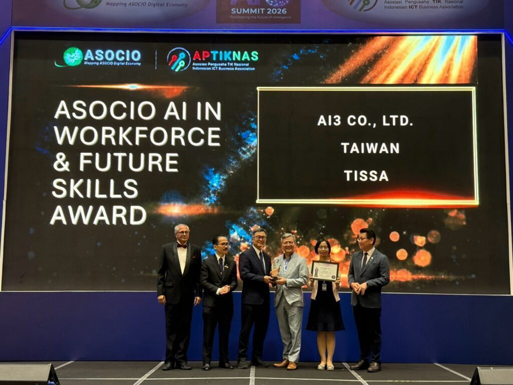
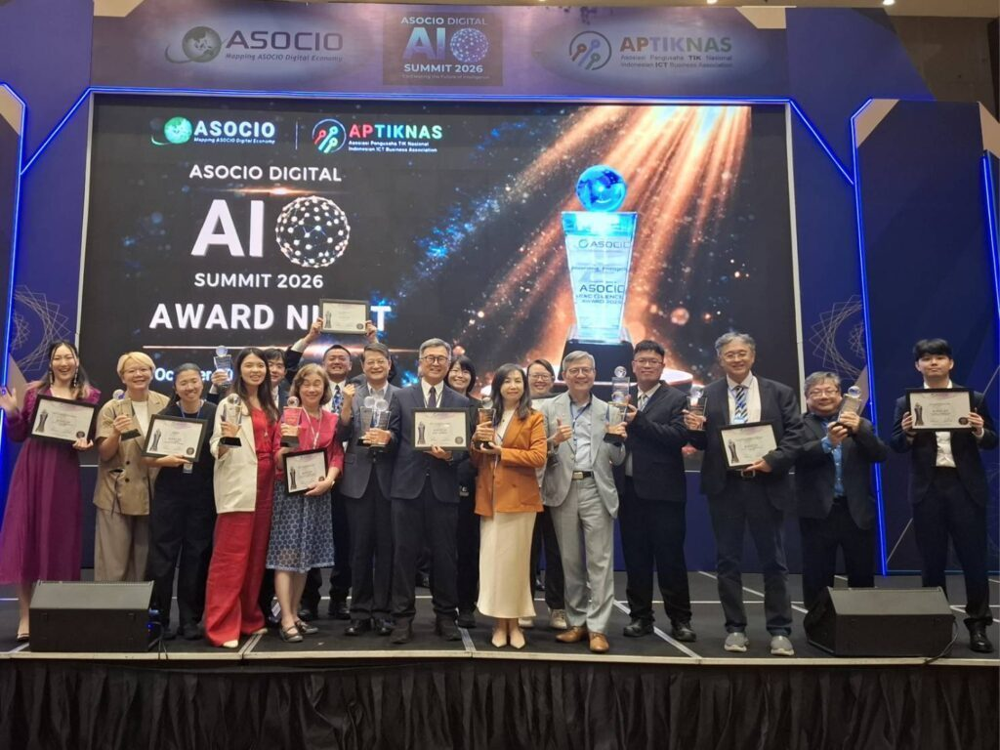
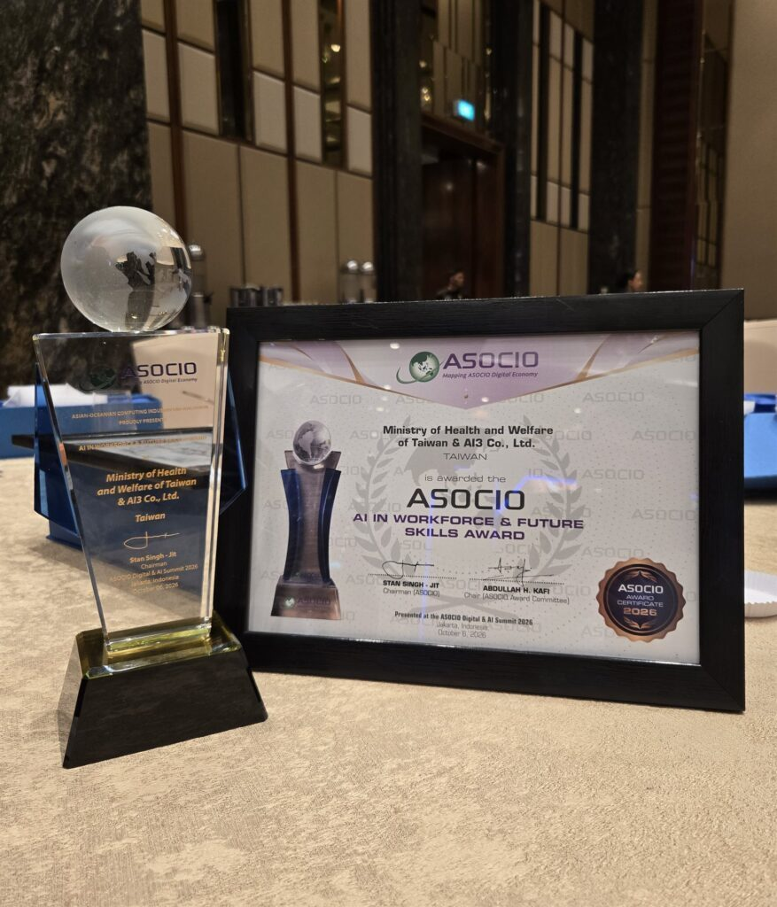

▲Ai3 董事長張榮貴博士出席 2026 ASOCIO 頒獎典禮代表領獎
人工智能股份有限公司（以下簡稱Ai3）榮獲2026年亞太資訊服務業組織（Asian-Oceanian Computing Industry Organization, ASOCIO）亞太資通訊數位AI應用獎（ASOCIO Digital AI Award）之「AI人才與未來技能應用獎(AI in Workforce & Future Skills Award)」，肯定Ai3公司在人工智慧應用、AI Agent與人機協作技術的實務成果，並由Ai3董事長張榮貴代表出席領獎。
「ASOCIO Awards 2026＋Digital AI Awards 2026」頒獎典禮於10月6日在印尼雅加達Swissôtel Jakarta PIK Avenue舉行，由ASOCIO主席Stan Singh Jit及獎項評審委員會頒獎。Ai3亦為本屆榮獲此殊榮的臺灣代表企業之一。

▲台灣獲獎單位於頒獎典禮現場合影
AI Agent 賦能第一線：推動 Human-in-the-Loop 人機協作新模式
此次獲獎的重要實績之一，是Ai3與衛生福利部共同推動的「Smart Care Support」智慧照護服務。面對1966長照服務專線持續成長的需求，Ai3打造整合生成式AI、知識庫與人工監督機制的智慧服務平台，協助第一線人員處理大量資訊與民眾需求，並保留必要時由真人介入的服務機制。
系統採用「Human-in-the-Loop」人機協作架構，透過虛擬人整合AI Agent服務民眾，一位專業客服人員可同時監看最多四組 AI Agent 的即時對話，系統並具備敏感關鍵字與高風險情境偵測功能，能主動提示客服人員，協助掌握需要優先處理的狀況，並在需要時即時介入。
透過這套協作方式，人員的工作從逐一回覆問題，延伸至AI回覆審查、異常情境判斷與服務品質管理。AI協助承接重複性需求，人員則運用專業知識與溝通能力，處理需要進一步釐清或關懷的問題，落實「AI協助篩選、人員負責把關」的理念。
佈局 Agentic AI 全方位應用：讓 AI 深度融入客服與企業營運流程
Ai3 以代理式 AI（Agentic AI）技術為核心，全面升級推出 QbiCX 智慧客服與數位員工整合平台，透過提升自助服務率、縮短通話時間及大幅降低話後處理時間（ACW），有效緩解企業面臨的人力短缺痛點。平台旗下涵蓋 QbiAgent（AI IVR）、QbiCockpit（智慧客服座艙）、QbiQuality（AI 質檢）、QbiKnowledge（AI 知識中台）及 QbiCowork（數位員工）等完整模組，協助企業將AI納入客戶服務與日常作業流程。
在客服場景中，QbiAgent可承接大量重複性工作，以更類似人類的服務，從24小時語音互動服務、資訊查詢到交易進行，提供更多自助服務，舒緩服務壓力。
在第一線人機協同作業上，透過QbiCockpit提供即時對話分析、獲取民眾情緒與關鍵字詞，掌握服務過程；於民眾詢問業務時，主動擷取問題，獲取知識輔助回覆；通話中取得資訊自動填表，指引服務要點；於通話結束後，自動生成通話摘要與服務小結，留下完整紀錄，減輕第一線人員負擔，讓客服人員更專注於複雜問題與高價值互動。
在服務品質管理上，以QbiQuality進行每通電話質檢，依品質管理提供個人質檢、場景質檢與話務合規分析，再由管理人員審查並做出最終判斷，形成「AI協助質檢、人員負責把關」的協作模式，提升檢核效率，並協助管理者掌握服務品質與潛在風險。
在後勤作業上，以QbiCowork建立數位員工團隊，將客戶服務或企業作業流程自動化，提供跨服務系統整合，減少人力負擔之餘，更能大幅提升作業正確性與時效性，必要時由人工進行成果審查，建立值得信賴的自動化作業環境。

▲Ai3 攜手衛生福利部榮獲 2026 ASOCIO「AI in Workforce & Future Skills Award」獎牌與獎狀
企業AI化同步建立AI治理機制 強化責任邊界與追溯能力
隨著AI代理人逐步進入企業作業流程，關注重點也從「AI能不能做」轉向「AI該怎麼被管理」。在獲獎案例中，AI互動、人工介入與管理皆可追蹤稽核，並透過人工審查、資料主權、權限控管與敏感資訊監控，確保AI在安全、可控、可追溯的架構下運作。
Ai3 董事長張榮貴博士指出：「企業導入AI的成敗關鍵，已不僅在於底層模型能力，更在於能否將 AI 真正無縫納入既有工作流程、決策體系與責任架構中，並在關鍵節點保留必要的人為監督。」面對企業對合規與風險控制的高度要求，Ai3不僅已領先業界取得ISO 42001人工智慧管理系統國際認證，更全面投入AI治理平台研發，將治理機制原生融入AI IVR、智慧座艙、AI質檢、知識中台至數位員工等全線產品，在極大化營運效率的同時，兼顧安全性、品質與問責機制。此次獲得ASOCIO「AI in Workforce & Future Skills Award」，也進一步肯定Ai3在人機協作與企業AI應用上的實務成果。